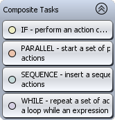
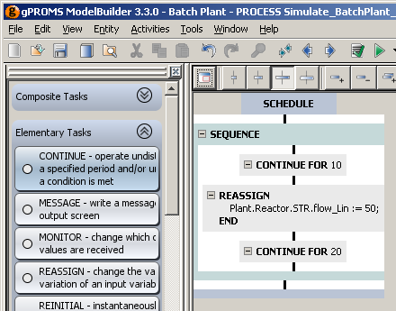

Width Controls
There are two main ways to build a Schedule: using the graphical interface or by entering gPROMS language. The former is by far the most convenient and is described here. The gPROMS language for Schedules is covered in the following sections, describing the Tasks in detail.
To begin building a Schedule, one must first create a Process. Let's assume one already exists, which contains all of the specifications for the simulation apart from the Schedule; that is:
Units are defined,
Parameters have all been Set,
Variables have been Assigned to take up any degrees of freedom and
Initial conditions have been specified
so that the simulation can be initialised. All that remains is to define what should happen during the simulation and when. For example, one can fill a reactor, heat it up, keep the temperature constant while the reactions take place, cool it down and finally empty it. These actions are defined by specifying changes in Assigned Variables and periods of uninterrupted simulation, all by using elementary Tasks.
Before these Tasks can be placed into the Schedule, we must first create a Schedule. To do so, double-click on the Process to open it in the
gPROMS editor window. There are four tabs in the Process window: Schedule, Solution parameters, gPROMS language and properties. The gPROMS language tab
contains all of the code that defines the elements of the Process listed above. The code for the Schedule will be placed at the end, in a
SCHEDULE section. The graphical interface is shown in the Schedule tab. These two views are shown below.
To create the Schedule using the graphical interface, a Task needs to be dragged from the Task Palette onto the Schedule window. Therefore, one must first click on the Palette tab in the Project tree. If the Palette tab is not visible, then it can be enabled by selecting Palette from the View menu or by pressing CTRL-F11. The Task Palette is shown below.
The Task Palette is divided into two panes: the top pane contains all of the available Tasks (arranged in four categories) and the bottom pane contains an explanation of the currently-selected Task. The four cetegories of Task are:
Composite Tasks, which combine elementary tasks and specify the manner in which they are executed (sequentially, concurrently, conditionally or iteratively);
Elementary Tasks, which are used to specify external disturbances to the systems (e.g. changing the values of simulation input variables, specifying periods of undisturbed operation etc);
Foreign Process Tasks, which control the way the results are displayed (but do not affect the results themselves); and
Predefined Tasks, which are user-defined reusable Tasks that contain a segment of an operating procedure.
To expand a category, simply left click on its title or on the symbol next to it. All of the available Tasks will then be shown. Left clicking on a task will display further information about it in the window at the bottom of the palette. Left clicking on the category title again or on the symbol will collapse the category.
To create the Schedule, left click on a Task and, while holding the left mouse button down, drag the Task onto the Schedule window. Before the mouse button is released, the mouse pointer will change to to indicate that the task will be copied into the Schedule. When the mouse button is released, the Schedule is created and the Task is placed into the Schedule. Most Tasks, however, need to be configured before they can be added to the Schedule; in these cases, a configuration dialog will appear and it must be completed before the Task is added.
This is demonstrated in the following example. Suppose we only want to simulate the Process for a given amount of time, without changing any of the input specifications. This is done with the Continue Task. Since the Continue Task instructs gPROMS to simulate the Process for a given amount of time (or until a certain condition is satisfied), this time (or condition) must be specified before the Task can be added to the Schedule. The figure below shows the Schedule and Task configuration dialog just after the Task had been dragged onto the Schedule window and the left mouse button released.
Configuration dialogs automatically check syntax, so this one initially states that the configuration will only be complete when a time value is entered in the first text box or a logical condition is entered in the second one. It is also possible to enter values in both boxes and the two conditions will be combined with an AND or OR logical operator, which can be selected using the radio button. In this case, it is disabled because both text boxes are empty. Once the configuration is complete, the OK button will be enabled and left clicking on this will complete the addition of the Task to the Schedule. This is shown in the figure below. (Left clicking on the Cancel button will cancel the addition of the Task, but will leave a blank Schedule in the Schedule window (visible just above the configuration dialog).)
Notice also that by left clicking on the Continue Task, the bottom pane of the Task Palette has been populated with an overview of the Continue Task. The scroll bar on the right can be used to scroll through the text and the size of the pane can be adjusted by dragging the divider up or down.
When a Task is added to the Schedule using the graphical interface, the gPROMS language is automatically added to the Process, as can be seen in the language tab below. The Schedule could have been created by typing this code into the Process and the same graphical Schedule would have been generated automatically.
Returning to the Schedule tab, it can be seen that the Schedule itself is represented in the graphical interface. It contains a black vertical line above and below the Continue Task. These lines are "hot spots" where additional Tasks can be added. In a blank Schedule (as seen in the screen shot showing the Task configuration dialog), there is just one black line and therefore only one place where a new task can be added. Once a Task has been added, a new one can be added before or after the first one, by dragging a new Task onto one of the lines.
The Continue Task displays the gPROMS language resulting from the specification made in the configuration dialog. In this case, the number 10 was entered in the first text box, specifying that gPROMS should simulate the Process for 10 units of time and then stop. It is possible to hide the details of any Task by left clicking on the symbol on the left (the details can be shown again by pressing on the symbol). This allows the user to customise how much detail is shown in the graphical view: as can be seen in the screen shot above, Tasks can be nested within other Tasks such that a complex hierarchy can be built up and it may not be desirable to see all of this detail all of the time. For this screen shot, the details of the Parallel Tasks were hidden so that the whole of the Schedule was visible in the editor. To save space, gPROMS will also only show the first 4 lines of code associated with a Task. An ellipsis (…) is used to indicate that some information is not being shown. There are three ways to see the details: 1. double click on the Task to bring up the configuration dialog; 2. view the Task language by right clicking on the Task and selecting Go to language from the context menu; or 3. move the mouse pointer over the Task and hold it there until a tool tip appears showing the details. You can also adjust the width of the Task boxes by pressing one of the four buttons shown below (see also the Schedule Tab Toolbar).
The first three limit the width of the Task boxes to small, medium and large. The last one removes the limit so that the Task boxes will be as wide as the longest visible line of language. The currently-selected option is indicated by the depressed button (the second one in the case above). In the screen shot above, it can be seen that the boxes are too narrow to show all of the lines for some of the tasks and this is indicated by the ellipsis at the end of the line (in the While and Parallel tasks).
Any Task can be selected by left clicking on it. Once selected, a Task can be deleted by pressing the DEL key or by right clicking and selecting Delete from the context menu. The Task can also be copied or cut using the context menu. It may be pasted into the Schedule by right clicking on one of the black lines and selecting Paste. Note that if you delete a Composite Task, then all of the Tasks that it contains will also be deleted. Pressing the button or CTRL-z will undo any changes made to the Schedule, including the deleting of Tasks. (Pressing the button or CTRL-y will redo any changes that have been undone.)
Tasks can also be reconfigured by double-clicking on them. This will open the Task Configuration dialog, allowing the details of the Task to be modified.
The context menu also provides another way of adding a new Task to an existing Schedule. Right clicking on a black line activates the context menu, which contains sub menus for each of the built-in Tasks: Composite, Elementary and Foreign Process. So to add a new Task using this method, right click on a black line, open the appropriate menu and left click on the Task you want to insert. The result is identical to dragging from the Task Palette: if necessary, a configuration dialog will appear and then the Task will be inserted in the chosen place.
So far, the Schedule we have created is very simple. Most Schedules will be more complex than this, and they may include many Tasks, some occurring after others have finished, some occurring concurrently with others and some Tasks may need to be performed iteratively or only if some condition is met. These structures can be created by using the Composite Tasks that have been mentioned briefly before. The Composite Tasks section of the Task Palette contains the four Tasks that allow Schedules of arbitrary complexity to be built. These are:

Each of these Tasks can be dragged onto a hot spot in the Schedule and they then provide locations for more Tasks to be added. These Tasks will be described in more detail later (see: Composite tasks). For now, we shall focus on the Sequence Task as the principles covered here apply to all of the above.
Let us proceed with the example given so far. We currently have just one Task in the Schedule: a Continue Task. Suppose that after the 10 units of time, we want to change the value of one of the input Variables. This can be done with the Reassign Task, and so all that need be done is to drag a Reassign Task onto the hot spot below the Continue Task. (Alternatively, we could right-click on the hot spot and choose Reassign from the Add elementary task context menu.
The result of the insertion is shown below (after the Reassign task has been configured – how to do this will be described in the Reassign section).
The first thing to notice is that a Sequence Task has automatically been inserted into the Schedule. This is because if two or more Tasks are to be performed in series, they must be enclosed in a Sequence Task. To save always having to insert the Sequence Task before adding elementary Tasks (such as the Continue and Reassign Tasks here) gPROMS will always insert a Sequence Task if one is needed. This means that you can drag any Task onto any hot spot and the resulting Schedule will always be valid.
Next, we have changed to width of the Task boxes to show all of the details of the Reassign Task. Here, the Reassign Task changes the value of
the Plant.Reactor.STR.flow_Lin Variable to 50.
The automatically-generated gPROMS language now looks like this:
SCHEDULE
SEQUENCE
CONTINUE FOR 10
REASSIGN
Plant.Reactor.STR.flow_Lin := 50;
END
END
It would have been easy to type this into the gPROMS language tab, but larger more complex Schedules (with all four types of
Composite Task being nested in complex arrangements) become harder to follow in this view and this method is therefore more prone to error. The
graphical view is much easier to follow and to modify, particularly if one wants to move or copy Tasks from one place to another, as we shall
demonstrate now.The Schedule currently does nothing new: although the Flow_Lin variable changes value, gPROMS stops the simulation immediately
afterwards. To see the effect of the change in flowrate, we must add another Continue Task. If we add one after the Reassign Task and set it to
simulate for 20 time units, we will have the following.

Now suppose that we want to see what would happen if we started the simulation by Continuing for 20 units, Reassigning the
Flow_Lin Variable and then Continuing for 10 units of time. We could just double click on the first Task and change its value to 20
and then do the same for the third task, but a quicker and easier way to swap these Tasks over is to move them. To move a Task, left click on it and,
while holding the left mouse button down, drag it to another hot spot. Before the left mouse button is released, the mouse pointer will change to
to indicate that the Task is being moved. Note, this is
similar to the pointer when a Task is being added, but without the "+" sign. When the left mouse button is released, the Task will be moved to the new
location (note that Tasks cannot be moved if the new location requires the addition of a new Sequence Task – in this case, one must either insert a new
Sequence and then move the Task or copy the Task and then delete the original one). Using this method, it is very quick and easy to move Tasks
around.
It is also possible to copy Tasks. This is done in a similar way to moving Tasks but by also holding down the CTRL key. To copy a Task, drag it to a new hot spot exactly as if it were being moved. The mouse pointer will change to to show that it is being moved. Now, before releasing the left mouse button, hold down the CTRL key. The mouse pointer will now change to to indicate that the Task is being copied. Keeping the CTRL key down, release the left mouse button and the duplicate Task will be added to the Schedule. gPROMS will insert a new Sequence Task if necessary. You can change a copy to a move or vice versa at any time during a drag: all that matters is the state of the CTRL key when the left mouse button is release.
If you prefer not to drag Tasks around, it is also possible to move or copy Tasks using the Cut, Copy and Paste commands in the Edit and context menus or their keyboard shortcuts (CTRL-x, CTRL-c and CTRL-v respectively). Simply right click on the Task, select Cut or Copy from the context menu, then right click on the desired hot spot and select Paste. To use the keyboard shortcuts, left click on the Task, press CTRL-x or CTRL-c, left click on the desired hot spot and press CTRL-v. (The currently-selected hot spot is shown as a blue line instead of a black one.)
It is possible to move, copy or delete multiple Tasks simultaneously. This is done by making multiple selections. To make a multiple selection, select the first Task as usual (by left clicking on it), then hold down the CTRL key and select another Task. As long as the CTRL key is held down, more Tasks can be added to the selection by left clicking on them. (Note that Tasks cannot be removed from the selection by left clicking on them again.) There is one restriction when making multiple selections: once the first Task is selected, you can only add more Tasks to the selection if those Tasks belong to the same Composite Task as the first one and at the same level in the Task hierarchy. The Schedule below (which is a modified version of the Batch Plant example) will be used to illustrate this.
The Continue Task at the top and the large Parallel Task can both be part of the same multiple selection because they are both part of the first Sequence Task. All of the other Tasks are also within the main Sequence Task, but because they are deeper in the hierarchy, they cannot be selected along with the first Continue Task.
The two While Tasks can form a multiple selection because they both belong to the large Parallel Task.
The two small Parallel Tasks cannot form a multiple selection because, even though they are at the same level in the hierarchy, they belong to different Sequence Tasks.
Finally, if we select the MonitorWast … Task, we can also select the ReplenishFee… Task and the Sequence
next to it, but neither the FillReactor … Task (wrong level) nor the MonitorProdu… Task (not in the same
Parallel).
Once a multiple selection has been made, it can be moved, copied or deleted just like a single Task. To delete all of the Tasks in a multiple selection (including any Tasks contained within them), simply press the DEL key or right click and select Delete from the context menu. To move or copy, make sure the CTRL key is held down and then left click and drag one of the Tasks to its new location. Releasing the left mouse button while CTRL is still held down will result in a copy; releasing the CTRL key first will result in a move. Releasing CTRL and pressing ESC while the Tasks are being dragged cancels the move/copy and retains the multiple selection.
When the Tasks in the multiple selection have been moved or copied, they will be pasted into the new location in a specific order. First, if they
are not copied or moved to a Sequence Task, then one will be inserted automatically and they will be inserted into that. Next, they will be inserted
into the Sequence Task in the order that they had in their original Composite Task. That is: if they were originally in a Sequence Task, then their
time order will remain the same; if they were in a Parallel Task then the order from left to right in the Parallel Task will become the order from
first to last in the Sequence; finally, if they were in an If Task then the Task in the TRUE branch will be inserted before
the Task in the ELSE branch.
Just as with any other edit made to the Schedule, a completed move or copy of a multiple selection can be undone by pressing CTRL-z or the undo button.
We have seen that when most Tasks are added to the Schedule, a configuration dialog appears. This is because most Tasks need some information to function. In the case of the Continue Task, we needed to specify an amount of time and/or a condition. We also saw that the Reassign Task needs to know which Variables to Reassign and the new values that they should take. Since different Tasks require different data, each configuration dialog will be different. These are discussed in detail in the sections that describe the Tasks. There are, however, some common features that can be described first.
The two features that are common to a lot of Task configuration dialogs are real-time syntax checking and the Advanced view.
All Task configuration dialogs constantly check for errors in the input data. Whenever the data would prevent the Task from working correctly, the OK button is disabled forcing the user to correct the error (or provide the minimum amount of data) before the Task can be inserted or amended.
The Reassign Task requires a list of Variables and values to assign to them. When first inserted into the Schedule, the list is empty as is shown in the screen shot below.
The Reassign Task is allowed to contain an empty list of Variables, so there is no error shown and the OK button is enabled. To add a new Variable, click on the <new> text, enter the path of a Variable and press RETURN. The path will be checked to make sure it is valid, as shown below.
As the path is incorrect, the dialog reports an error and disables the OK button. If a syntactically valid path is entered, but the Variable does not exist, gPROMS gives a warning instead and enables the OK button. This is because one might want to define this Variable after adding the Task.
This warning is also shown in the graphical Schedule:
If the Schedule is entered using gPROMS language tab, then syntax errors can occur and they will also be shown in the graphical Schedule (using a symbol). Double click on the Task (or go back to the gPROMS language tab) to see the error message(s).
Once a legal Variable path has been entered, an expression for the new value must be entered. By default, this is zero but when a new expression is entered, gPROMS checks its syntax and displays the message below if it is illegal. Note also that warnings are highlighted in orange and errors in red.
When all of the input data are correctly entered, the Advanced button is enabled. This allows you to see the gPROMS language of the Task, as shown below.
Pressing the Simple button returns to the tabular view.
In summary:
Schedules can be created using gPROMS language or the graphical interface
Both methods are equivalent and can be used interchangeably on the same Schedule
To create a Schedule
Click on the Schedule tab of a Process
Open the Task Palette
if not visible, select Palette from the View menu or press CTRL-F11
Drag a Task from the Task Palette onto the Schedule
Additional Tasks can be dragged from the Task Palette into the Schedule using the hot spots (vertical black lines in the Schedule) or by right clicking on a hot spot and using the context menu to insert a new Task
For most Tasks, a configuration dialog will appear and need to be completed before the Task is inserted
The simple view allows the Task to be configured using text boxes and buttons
The advanced view allows the Task to be configured using gPROMS language
Both views have real-time syntax checking
Double click on existing Tasks in the Schedule to bring up their configuration dialogs
Composite Tasks allow complex structures to be built up
Sequence, Parallel, While and If allow sequential, concurrent, iterative and conditional execution of Tasks
A Sequence Task is automatically inserted if needed
Task information is shown on the Schedule and the level of detail shown is controlled by:
Setting the width of Task boxes, using the buttons
Hiding or showing the details using the or buttons (or by using the Schedule Tab Toolbar)
Tasks never show more than four lines of language in the graphical Schedule; to see the full details:
Move the mouse pointer over the Task to bring up a tool tip that shows all of the language;
Double click on the Task and select the Advanced view; or
Right click on the Task and select Go to language from the context menu
Tasks can be selected by left clicking on them
multiple selections can be made by holding the CTRL key and left clicking on Tasks
multiple selections may only comprise Tasks belonging directly to the same Composite Task
Tasks can be moved by dragging them to a new hot spot and copied by dragging with the CTRL key held down
Works with multiple selections as long as the CTRL key is held down
The original order is retained and a Sequence is added if necessary
The Cut, Copy, Paste and Delete context menu items can be used for moving, copying or deleting selected Tasks
All of the gPROMS language for Schedules is contained in the gPROMS language tab of the Process, within a SCHEDULE section at the end
The next subsection briefly describes the Schedule Tab Toolbar.
The subsequent sections describe in more detail (including how to write gPROMS language):
Elementary tasks (what to do),
Timing structures (when to do it),
Predefined Tasks are described afterwards. See: Defining Tasks.